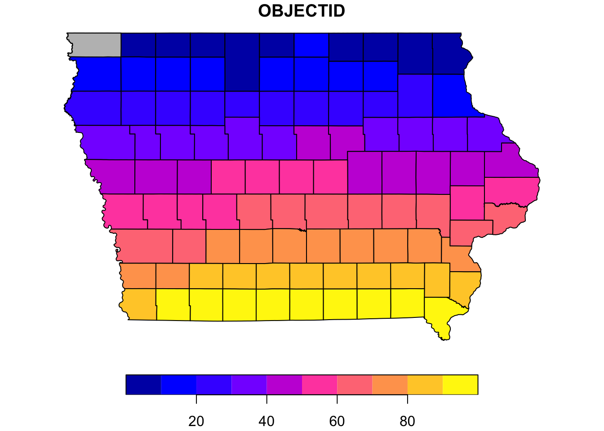
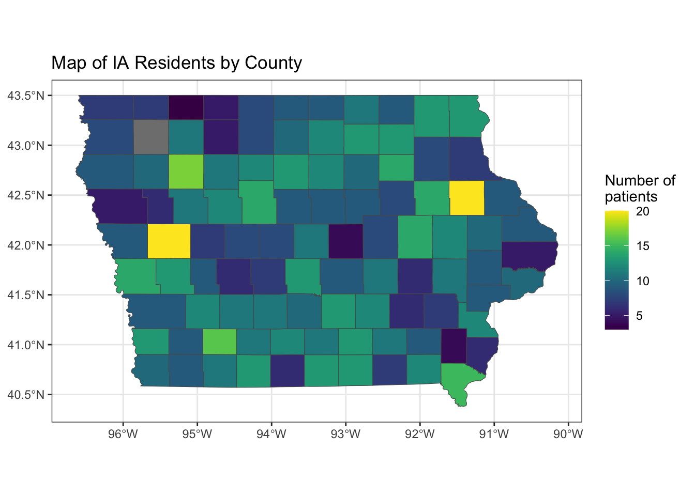

Chapter 16 Geographic (GIS) data analysis
In a couple of my projects, I have had the opportunity to visualize data using maps at the county level. Here is an example of the sort of maps I have made, using some simulated data.
Suppose that a PI wants to study access to care through teledentistry. The specific research question is something like, “in a population of patients treated at my dental clinic from January 2021 - May 2023, what were the patterns in the relationships between 1) the distance traveled to the clinic, 2) the mode of the intake exam (in-person or virtual), and 3) treatment completion within 6 months (yes or no). Suppose further that I (the analyst) have access to the county in which each person lives, in addition to the clinical information relevant to our research in the electronic dental records.
The first thing I would do is look online to find publicly available data with Federal Information Processing Standard (FIPS) codes for Iowa at the county level. I will use the R package sf to handle GIS data, which often comes in .shp or GeoJSON formats. Data in these sorts of files have what we need to draw a map of Iowa with the counties demarcated on the map.
library(sf) # package for GIS data ## Linking to GEOS 3.10.2, GDAL 3.4.2, PROJ 8.2.1; sf_use_s2() is TRUEia <- st_read("data/Iowa_County_Boundaries.geojson")## Reading layer `IowaCounties' from data source
## `/Users/tabithapeter/Desktop/train_gra/data/Iowa_County_Boundaries.geojson'
## using driver `GeoJSON'
## Simple feature collection with 99 features and 9 fields
## Geometry type: MULTIPOLYGON
## Dimension: XY
## Bounding box: xmin: -96.63944 ymin: 40.37566 xmax: -90.1401 ymax: 43.50109
## Geodetic CRS: WGS 84ia_geom <- st_geometry(ia)
# check - a test plot to make sure the map looks right.
par(mar = c(0,0,1,0))
plot(ia[1], reset = FALSE) # reset = FALSE: we want to add to a plot with a legend
plot(ia[1,1], col = 'grey', add = TRUE) This sample map is the correct shape – here, the 99 counties are colored according to their index (1-99). We want to make a map where the colors correspond to the number of patients representing each county.
Supposing one has access to electronic dental records, the data for such a study may look like this:
# simulate data
library(dplyr)##
## Attaching package: 'dplyr'## The following objects are masked from 'package:stats':
##
## filter, lag## The following objects are masked from 'package:base':
##
## intersect, setdiff, setequal, unionkey <- read.csv("data/ia_counties.csv") |>
# narrow down to only IA (for sake of example)
filter(State == "IA") # gives me county names
# TD = teledentistry
set.seed(52242)
td <- data.frame(
id = 1:1000,
year = sample(2021:2023, 1000, replace = TRUE),
complete = sample(0:1, 1000, replace = TRUE),
county = sample(key$NAME, 1000, replace = TRUE),
mode = sample(c("virtual", "in-person"), 1000, replace = TRUE)
)
library(knitr)
head(td) |>
kable(caption = "Simulated data from electronic dental records")| id | year | complete | county | mode |
|---|---|---|---|---|
| 1 | 2021 | 0 | Howard | virtual |
| 2 | 2021 | 1 | Clay | in-person |
| 3 | 2021 | 0 | Palo Alto | virtual |
| 4 | 2022 | 0 | Buchanan | virtual |
| 5 | 2022 | 0 | O’Brien | virtual |
| 6 | 2023 | 1 | Floyd | virtual |
Now, I am ready to create a map that will communicate to my collaborators where our patients are driving from to receive their treatment.
# determine how many patients in each county
td_summarize <- td |>
group_by(county) |>
summarise(N = n()) %>%
ungroup()
# add fips codes (from GeoJSON file)
td_summarize <- right_join(td_summarize, ia,
by = c("county" = "CountyName"))
# create sf object (for drawing a map)
map <- td_summarize %>%
st_as_sf()
# draw the map
library(ggplot2)
library(viridis)## Loading required package: viridisLiteggplot() +
geom_sf(data = map,
aes(fill = N)) +
scale_fill_viridis() +
labs(title = "Map of IA Residents by County", fill = "Number of \npatients") +
theme_bw() 